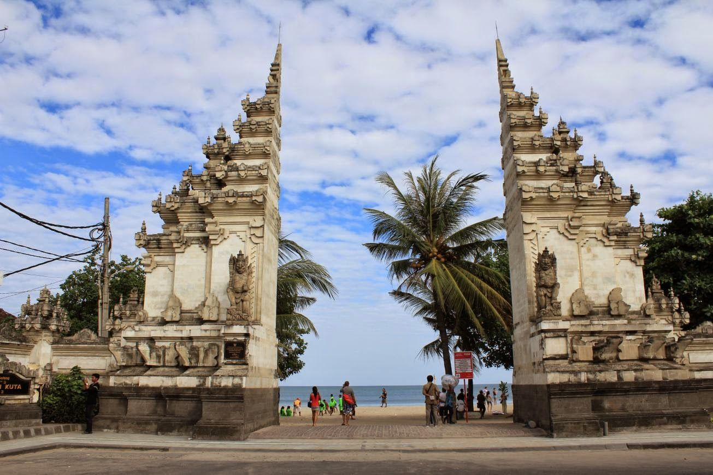

|  |  |
 |
Pantai Kuta
Pantai Kuta adalah sebuah tempat pariwisata yang terletak di kecamatan Kuta, selatan Kota Denpasar, Bali, Indonesia.
Daerah ini merupakan sebuah tujuan wisata turis mancanegara
dan telah menjadi objek wisata andalan Pulau Bali
sejak awal tahun 1970-an.
Tanah Lot
Pura Tanah Lot adalah sebuah objek wisata di Bali, Indonesia. Terdapat 2 pura yang terletak di atas batu besar. Satu terletak
di atas bongkahan batu dan satunya terletak di atas tebing mirip dengan Pura Uluwatu. Pura Tanah Lot merupakan
pura tempat pemujaan dewa-dewa penjaga laut.
Pantai Pandawa
Pantai Pandawa adalah salah satu kawasan wisata di area Kuta selatan, Kabupaten Badung, Bali. Pantai ini terletak di balik perbukitan dan sering disebut sebagai Pantai Rahasia Di sekitar pantai ini terdapat dua tebing yang sangat besar yang pada salah satu sisinya dipahat patung Pandawa.
Pura Ulun Danu Bratan
Pura Ulun Danu Bratan merupakan sebuah candi yang terletak ditepi barat laut Danau Bratan di pegunungan dekat Bedugul.
Danau Bratan dikenal sebagai danau "gunung suci", kawasan ini sangat subur, terletak pada ketinggian 1.200 meter,
dan beriklim sangat dingin.
Pantai Nusa Dua
Nusa Dua merupakan sebuah tanjung yang terletak di tenggara pulau Bali. Jaraknya terletak kurang lebih 40 kilometer dari Denpasar, Bali.